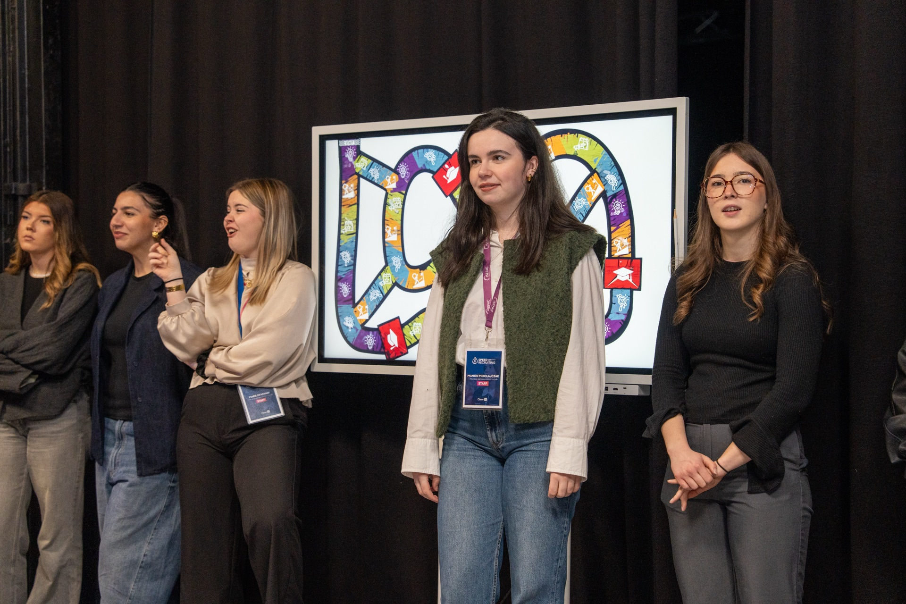
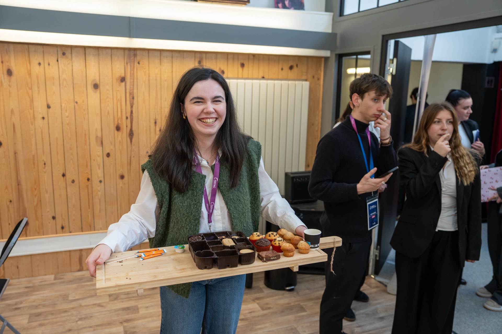

Projet LAB ISEFAC Lille — 6e édition
Cartes
sur Tables
L'événement phare du LAB ISEFAC Lille dans sa sixième édition. Une soirée à thème Casino réunissant étudiants et professionnels du secteur événementiel, portée de A à Z par l'équipe du LAB.


Le projet
Une soirée phare qui rassemble étudiants et professionnels
Cartes sur Tables est l'événement annuel emblématique du LAB ISEFAC Lille. Pour sa 6e édition, nous avons choisi le thème Casino : une atmosphère glamour et immersive, pensée pour créer des moments de rencontres authentiques entre étudiants en événementiel et professionnels du secteur.
L'ambition de la soirée va bien au-delà du simple événement festif : Cartes sur Tables est avant tout un espace de networking, une vitrine des compétences de l'école et une occasion unique pour les étudiants de se mettre en situation réelle face à des intervenants du monde professionnel.
Coordonner un événement d'une telle ampleur — près de 190 participants dont une cinquantaine de professionnels — nécessite une organisation minutieuse, une communication fluide entre toutes les parties et une capacité à gérer l'imprévu le jour J. C'est précisément ce que ce projet m'a permis de développer concrètement.
Mes missions
Chargée de projet — de la conception à l'opérationnel
- Élaboration du planning général et du rétro-planning de l'événement
- Rédaction du roadbook complet : déroulé de soirée, fiches de poste, protocoles
- Gestion des inscriptions participants : suivi des confirmations, relances, listes d'accueil
- Coordination des bénévoles le jour J : briefing, attribution des rôles, supervision terrain
- Relation avec les intervenants professionnels : invitations, accueil, logistique dédiée
- Création des supports de communication sous InDesign (flyers, affiches, programmes)
- Écriture du script de la vidéo de présentation diffusée lors de la soirée
- Gestion opérationnelle complète le soir de l'événement : timing, coordination des équipes, gestion des imprévus
Bilan
Ce que ce projet m'a appris
Cartes sur Tables a été ma première expérience en tant que chargée de projet sur un événement de grande envergure. J'ai appris à jongler entre vision d'ensemble et exécution dans le détail — à tenir un planning tout en restant suffisamment souple pour absorber les ajustements de dernière minute.
La relation avec les professionnels m'a imposé un niveau d'exigence et de professionnalisme que j'ai trouvé stimulant. Gérer des intervenants extérieurs, anticiper leurs besoins et leur offrir une expérience fluide, c'est une dimension que je veux continuer à développer dans ma carrière.